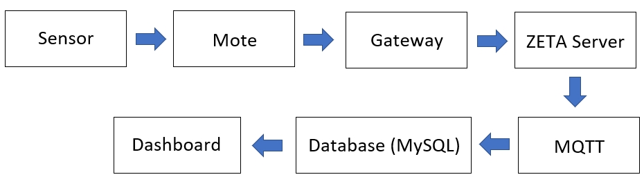

Vibration Sensor With IoT
ทำการใช้ Edge-AI Vibration Sensor ซึ่งมีระบบ AI ในการเรียนรู้และจดจำการทำงานปกติของมอเตอร์ เพื่อนำมาตรวจสอบการทำงาน และความผิดปกติต่างๆของมอเตอร์ เช่น อุณหภูมิ การสั่นของมอเตอร์ความเร็วของมอเตอร์ โดยในที่นี้มีการใช้งานกับกับมอเตอร์ปั๊มน้ำที่บริเวณตึกภาควิชาโทรคมนาคม และทำการวัดค่าอุณหภูมิและความชื้นโดย Temp Humid sensor และวัดค่าความเข้มแสงโดย Light sensor และทำการส่งข้อมูลไปยัง AP Gateway (sim) ซึ่งข้อมูลจะถูกจัดเก็บไว้บน Zeta sever และทำการดึงข้อมูลจาก Zeta sever โดยการใช้โปรโตคอล MQTT (Message Queue Telemetry Transport) ซึ่งมีการเขียนโปรแกรมด้วยภาษา Python และทำการนำข้อมูลที่ได้มาเขียนให้อยู่ในรูปของ JSON Files และนำข้อมูลที่ได้มาแสดงบน Dashboard ที่อยู่บน Website ที่ได้ทำการสร้างขึ้นด้วยภาษา HTML , CSS , Javascript
